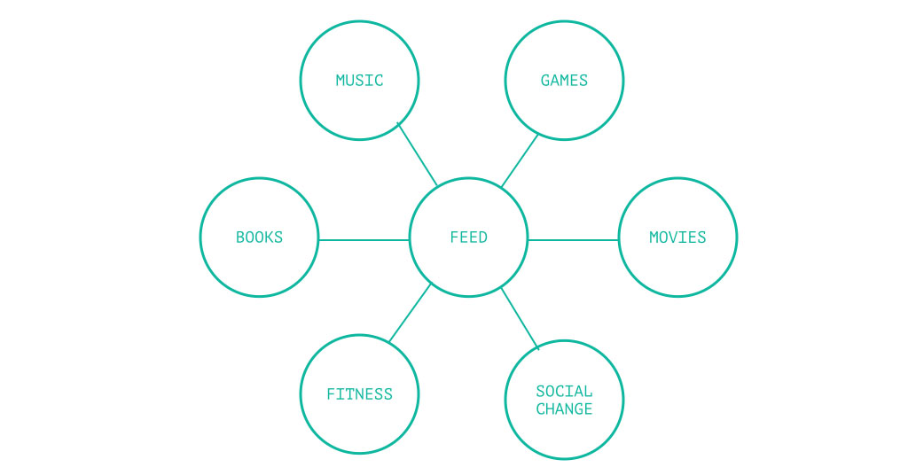
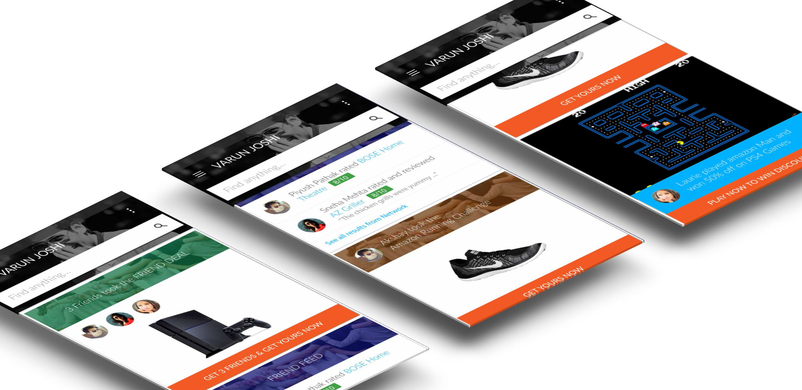

We started by analysing popular social applications such as Facebook, Instagram and Twitter. The one thing that tied these widly successful social platforms together was a feed; an interactive update on what people around the user were up to.
We drew together some aspects of a feed that would entice a user to launch the Amazon mobile app for casual browsing. These were mainly music, books, movies, games, fitness, and social change. 
Amazon wanted the re-design to reflect three core values:
We drew together some aspects of a feed that would entice a user to launch the Amazon mobile app for casual browsing. These were mainly music, books, movies, games, fitness, and social change.
We started out by sketching some scenarios that would show up on a user's feed. The feed would be populated vased on the user's personal preferences and preferences of people in the user's social circle. This would encourage the user to discover and subsequently purchase new products.
Some examples that we thought of:
Here are some of our high-fidelity prototypes reflecting the sketches.
